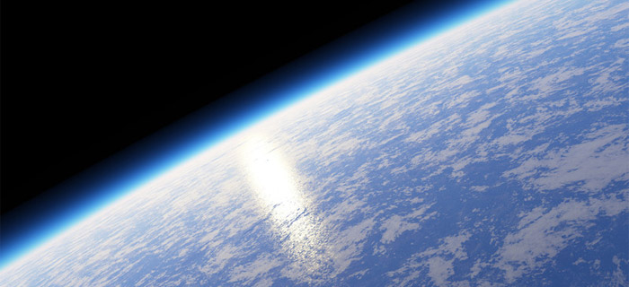

VZDUCH
Atmosféra alebo ovzdušie Zeme je plynový obal obklopujúci Zem.Nemá výraznú hornú hranicu (splýva s kozmickým priestorom) a otáča sa spolu so Zemou. Chráni nás pred škodlivým kozmickým žiarením, škodlivým slnečným žiarením a slnečným vetrom. Prebieha v nej tvorba počasia. Obsahuje vzduch, ktorý dýchame. Bez nej by nemohol existovať život.
Plyny, ktoré tvoria atmosféru, udržuje okolo Zeme gravitačná sila. Atmosféra sa najčastejšie delí na tieto časti: troposféru, stratosféru, mezosféru, termosféru a exosféru (pozri ďalej). Každá z nich obsahuje zmes plynov, ktorej hustota sa so vzdialenosťou od Zeme zmenšuje. Už vo výške 100 km nad morom (čiže v spodnej termosfére) leží tzv. Kármánova čiara, čiže hranica, ktorú FAI (IAF, Medzinárodná astronautická federácia) považuje za začiatok vesmíru (outer space).
Do atmosféry vstupuje z okolitého vesmíru elektromagnetické vlnenie rôznych vlnových dĺžok, ale väčšinu z nich atmosféra na dlhé vzdialenosti pohlcuje. Prepúšťa len žiarenie s vlnovou dĺžkou medzi 1 cm až 11 metrov (rádiové okno) a s vlnovou dĺžkou medzi 300 až 1100 nm. Táto oblasť sa nazýva optické okno, napriek tomu, že obsahuje aj časť infračerveného a ultrafialového žiarenia. Optické okno je zvlášť dôležité pre život na Zemi.
Zloženie
Atmosféra je v podstate zmes:99 %: 10 plynov, najmä dusíka a kyslíka, 1 %: argón a veľmi malé množstvo oxidu uhličitého, hélia, neónu, oxidu siričitého, amoniaku, oxidu uhoľnatého, ozónu a vody, nečistôt, ako splodiny, dymové častice, soľ, sopečný popol
Zloženie atmosféry závisí aj od výšky. V časti homosféra (čiže asi do výšky 95 km, ktorú obyčajne nazývame „vzduch“) je prakticky rovnaké, s výnimkou CO2 (podiel sa mení s časom a výškou), ozónu (podiel sa mení s výškou) a vody vo všetkých skupenstvách (najmä vodnej pary; voda tvorí do výšky 10 km asi 4% atmosféry).
Vývoj
Atmosféra sa neustále vyvíja. Krátko po vzniku Zeme bolo zloženie zemskej atmosféry veľmi podobné zloženiu atmosféry iných planét. Najhojnejšie v nej bol zastúpený vodík a hélium, v menšej miere sa v nej vyskytovali aj amoniak, metán, vodné pary a oxid uhličitý. Voľný vodík a hélium však postupne unikali do vesmíru. Zem nemá dostatočnú gravitáciu na dlhodobé udržanie si týchto plynov. Množstvo vodných pár v atmosfére sa naopak zvyšovalo, pravdepodobne dopadom komét na zemský povrch. Tieto vodné pary sa neskôr skondenzovali a dopadali na povrch Zeme, kde vytvárali oceány. Oxid uhličitý sa za pomoci vody postupne absorboval v horninách.
Pre vznik dnešnej atmosféry však bol najvýznamnejším momentom vznik života. Pred 2,3 miliardami rokov začali živé organizmy v moriach produkovať kyslík. Kyslík z vody postupne prechádzal do vzduchu, kde jeho množstvá pozvoľna stúpali. Pred 1,9 miliardami rokov bolo množstvo kyslíka asi 15%, pred 540 miliónmi rokov to bolo 18% (v minulosti však boli aj obdobia s vyššou koncentráciou kyslíka, než je tomu dnes, napríklad v období karbónu). Obohacovanie atmosféry o kyslík bolo významným geochemickým dejom, ktorý spôsoboval oxidáciu, predtým chemicky stabilných látok. Došlo napríklad k nahromadeniu obrovského množstva páskovaných železných rúd. Hladina oxidu uhličitého počas vývoja kolísala, ale vo všeobecnosti mala klesajúcu tendenciu, nakoľko živé organizmy využívajú oxid uhličitý pre svoj rast. So vzrastajúcimi množstvami kyslíka súvisí aj vznik ozónovej vrstvy. Až po vzniku prvotnej ozónovej vrstvy sa život rozšíril z mora na súš.